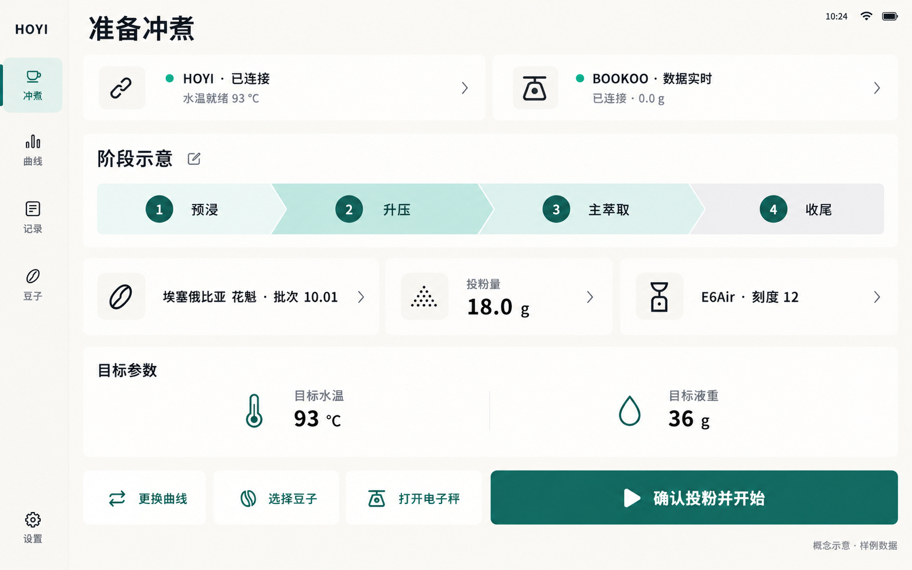

冲煮与实时状态7 页
准备、实时、结束和断链；实时页有平板浅色与手机深色两种示意。


曲线与分享6 页
选择与排序、查看、编辑、分享、导入和兼容性预览。


记录与复盘4 页
保留每杯记录，写下感受与下次调整，并比较两杯表现。


咖啡豆库存与联动6 页
独立库存、批次、入库、流水，以及冲煮时选豆和确认消耗。


独立电子秤3 页
独立称重工具、连接管理和按实际能力展示的联动设置。


应用与咖啡机设置2 页
将低频偏好与设备设置移出实时萃取区。
28 张独立页面设计示意。覆盖冲煮、曲线、记录、豆子库存、电子秤和设置。点击缩略图查看大图，或按模块筛选。
内置 ImageGen 生成 · 样例数据 · 不是已实现界面。页面 05 为可选参考方案；图中文字、轴刻度和设备能力仍需正式设计及实机核对。
准备、实时、结束和断链；实时页有平板浅色与手机深色两种示意。
选择与排序、查看、编辑、分享、导入和兼容性预览。
保留每杯记录，写下感受与下次调整，并比较两杯表现。
独立库存、批次、入库、流水，以及冲煮时选豆和确认消耗。
独立称重工具、连接管理和按实际能力展示的联动设置。
将低频偏好与设备设置移出实时萃取区。